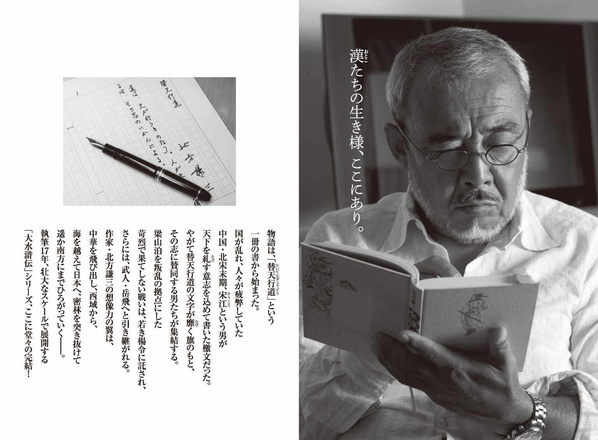
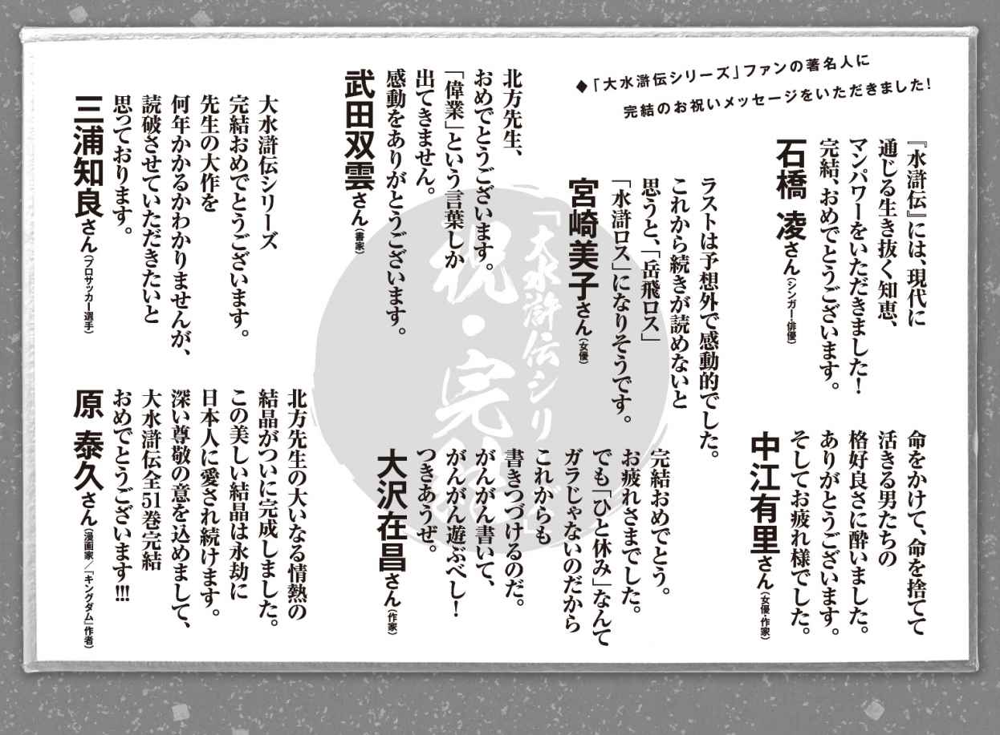
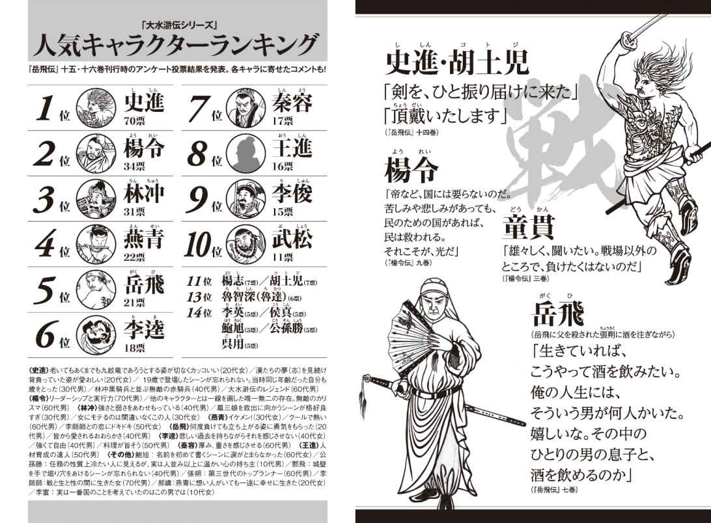
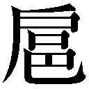
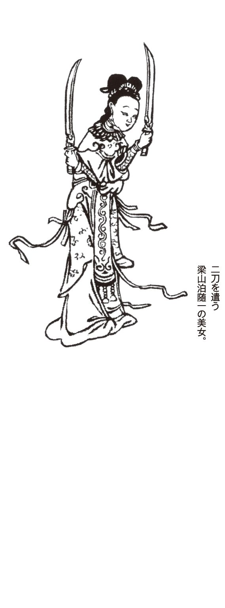
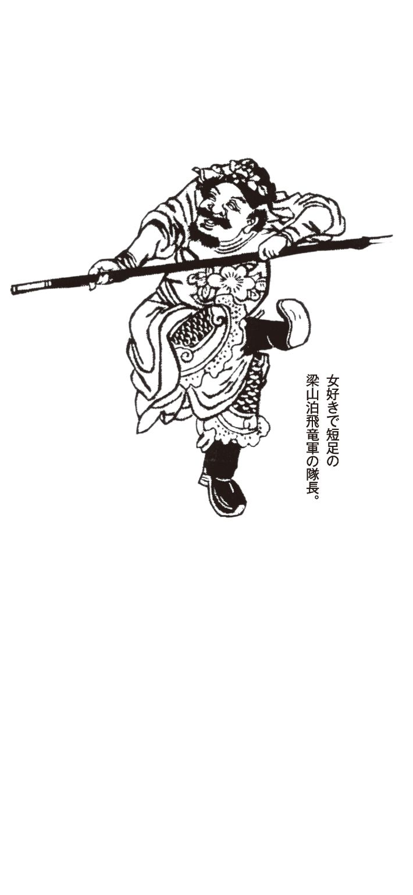
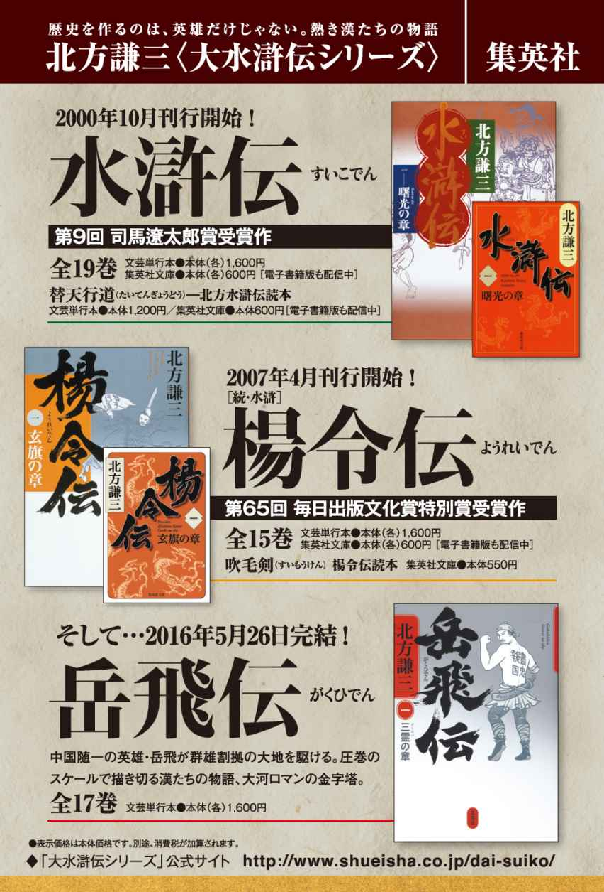

| 大水滸伝シリーズガイドブック (集英社文芸単行本) | |
| 北方謙三 | |
| (2016) | |



熱き好漢たちと著者の語らい実現！
◆大水滸伝シリーズ公式サイト連載のショートストーリー、書き下ろし２話を特別掲載。８話まではサイトにて公開中。
「夕 餉 の時」４
眠っていた私は、肩にやわらかなものが触れてくるのを感じて、眼を開いた。指と言うか、掌であった。こんなやわらかさを、私は知らない。掌の持主は、美貌であった。美人とか佳人とかより、秀麗な女という印象が強い。私はちょっと緊張した。
「海 棠 の花」
「そんなふうに、言われたこともあるわ」
「まだ、独 竜 岡 にいるのか？」
「なんということを、おっしゃるの。あたしは、林 冲 殿の騎馬隊の、指揮官のひとりよ」
「あの林冲が、岩に叩きつけて殺そうとするほど、鼻持ちならない女だったよな」
 三娘は、秀でた眉をちょっと動かした。それだけでも、私の男の部分をそそった。
「鄒 潤 殿を人ではないと言わせたのは、あなたよ。あたしはずっと、それを気にしてきた。そんなふうに、人を傷つける人格が、最後まで拭いきれなかったと思う」
「美人は損をするよな」
「損をしすぎよ。あなたは、人生で、花と呼ばれるような女性と、親しくなることがなかったでしょう。その屈折で、あたしをいろいろな目に遭 わせてくれたわ」
「謝れないんだよ、俺の立場では」
「わかっているから、首を落としたりはしなかった。ちょっと話をしようと思っただけで。日 月 二振りの剣をあたしに持たせたのも、あなたよね。剣がすべての女などに、あたしはなりたくなかった」
「その剣で、君の人生は輝いたよ」
「あなたが、そう思っているだけ」
なにか、抗 い難 い気配が、 三娘にはあった。顔の造形が、美しいだけではない。肌まで、私をそそり続けた。
「聞 煥 章 という男に、あたしは信じられないほどの凌 辱 を受けた。およそ、人が想像し難 いようなことよ。あれは、あなた自身の性向なのかしら。それとも、聞煥章を描くためだけに、あたしをあんな目に遭わせたの？」
「美しいものを、破壊したい。かぎりない凌辱で。それは、平凡な男が持つ、ひそやかな願望なのだよ。俺と重ね合わせたりはしないで欲しいな。それ以上は、言わないが」
「あたしも、飲んでいいかしら。お酒で、あの凌辱が遠くなるとは、思えないけど」
「酒は、ひと時の、忘却のための道具だ」
三娘は、いつの間にか杯を持っていて、たおやかな仕草でそれを呷 った。いい女。できることなら、私だけしか見ていない女にしたいものだ。聞煥章も、そうだったのだろう。
「息子は、立派なものだ」
「息子は二人。王 貴 と王 清 にも、それぞれ母は二人いる」
「二人とも、立派なものだよ」
「息子の話を、したいわけじゃないの、あたしは。あなたが、どんな男か見たかっただけよ」
「それで？」
「平凡で、小心で、そういう自分をいやだとも思っている」
「まあ、当たっているかな」
「問題は、すべての人間と、何か関わりを持っていることよね。そういう立場だ、ということはわかっているけど」
「悪意を持って、関わったことはない」
「あたしと花 飛 麟 殿を結びつけた。あたしはともかく、それが花飛麟殿が死ぬ原因にもなった。それは、悪意でなくて？」
「花飛麟が死んだのは、俺も予想外で、ちょっとばかり痛い出来事だったよ」
「まあ、そう言うのよね、あなたはいつも」
「それ以上、言うなよ。一 丈 青 」
「花飛麟殿がいれば、呼 延 凌 と秦 容 は、両翼の将軍で、軍のかたちは整ったわ」
「もうよせと言ったろう。それより確かめておきたいことがある。晁 蓋 殿に対して、おまえはひそかな思いを抱いていたよな。それはずっと続いていたのか？」
三娘が、ちょっと表情を動かして、笑い声をあげた。笑顔にはまた、はっとするような秀麗さがある。
「小娘が、ちょっとだけ抱いた淡い思い。春の露のようなものだわ」
「そんなものか」
「晁蓋殿は亡くなられた。だから若いころの姿のままが、心に残ってはいるのだけど」
「子を生 すために、王 英 と結婚した」
「それだけじゃない。あたしは王英殿に助けられた。その借りがあったわ」
「借りを返すための、結婚か」
林冲に、岩に叩きつけられた。殺す気はなかったとしても、林冲がかっとしてやったら、普通は死んだだろう。暗に、林冲は自分が抑えきれなくなるところがあった。
「もう、あたしは行こう」
「もう一杯だけだ。 三娘」
三娘に、酒を注いだ。自分のことではなく、花飛麟のことで私を責めたがっていたのだと、私にはわかった。
風が吹いているのか。酔いの錯覚か。私はいつか眠りの中に落ちていた。

「夕餉の時」５
足音はしなかった。しかし、気配まで殺してはいない。
私は眼を開き、周囲を見回した。ここは朱 貴 の店か、朱 杏 の店か。あるいは、どこかの小さな食堂なのか。
「あんた、 三娘に会ったろう？」
「そんな気がする」
「俺のことを、何か言っていたか？」
「まだ逃げ回っているのか、王英。おまえには、助けられた恩がある、というようなことを言っていたな」
王英は、卓を挟んでむき合うように座った。髭に白いものが目立ち、疲れた表情をしている。任務は、いつも過酷だった。
「助けられた恩だって。そんなもの、どうでもいい。俺が、 三娘の心の中に、まだ夫としているのかどうかだ」
それはない、と私は思っていたが、なにも言わなかった。二人の息子の父という認識はあるだろうが、それだけだ。
「白 寿 も、同じようにこわいのか？」
「 三娘は怒り、白寿は悲しみ憎む。女のいやなところを、俺は全部引き受けなけりゃならないんだ。あんた、まったく残酷なことをしてくれたもんだ」
「まあ、白い豊かな躰 を見てみると、自分を抑えられなくなり、後先考えずに行動に及んでしまう。そういうやつなんだ」
「それで、俺をひどい目に遭 わせるってかい」
「おまえのことじゃない。俺のことだ。悪かったと思うよ。俺のそんなところを、ふっと人格に付与してしまって」
「頭を抱えて、逃げ回るのもか？」
「それはない。俺は開き直って、命でもなんでも差し出すよ。逃げ回るのは、おまえが勝手にはじめたことだ」
「そんなふうに、なっちまったってことか」
「まあ、相手が 三娘だった。俺ははじめから、 三娘のような女には手をださない。それで、この歳まで生きてるんだよ」
「あんたが、女たちに切り刻まれるのを、俺はこれから、夜 毎 、想像することにする」
「まあ、勝手にやるさ」
「そうだよな。想像ってことじゃ、あんたの方が上で、思いのままだもんな」
「そんなことはない。飛 竜 軍に入ってからのおまえの働きは、俺の想像を超えていたよ」
「信じていいのかい？」
「俺は、瞠 目 した。任務に関しては、男というものを貫き通した、と思っているよ」
「言ってくれるじゃねえか。そんなに恰好よく書かれたとは、俺にゃ思えねえ」
「おまえの任務は、目立たないところが多い。結果の裏側に、いつもおまえらの存在があったんだ。それは、誰でもわかっている」
「もういいよ。腹が減った」
「なにか食うといい。頼めば出てくる」
「あんた、酒だけかい？」
「もう、溺れているな」
「書いている時は飲まない。そう聞いたぜ」
「書く時は、飲まないさ。いまは、流浪中ってところか。アフリカか南米を歩きたかったんだが、気がつくとここにいた」
「みんなに会えるぜ。悪いところじゃない」
王英は、酒を呷 った。食べ物は、頼もうとしていない。私は、杯に注いでやった。
「あんたに、礼を言おうと思っていてな。いざとなると、照れちまうんだが」
「なんなんだ。おまえが礼だと？」
「言ってしまうが、息子二人にいい人生をくれて、感謝している」
王 貴 と王 清 は、まだこれから生きなければならない。苦労もさせたが、生きる喜びも感じさせられた、と私は思っていた。
「俺はな、父親として何か教えてやることはできなかった」
それは、私の責任だろう。二人の母親には、それらしいことをきちんとさせた、という気がする。
父である王英を、私はどれだけ考えただろうか、とふり返ると、気 後 れさえも感じる。
「あの二人が、それぞれの人生を生きているのを見ると、俺の人生も捨てたもんじゃなかった、と思えるんだよ」
三人で、一緒に過ごしたことがあったか、と訊きそうになり、私は口を噤 んだ。無責任過ぎる。
どれだけの人間に無責任なことをしたか考えそうになり、私は酒を呷 った。
王英が、二人の息子のいまを語りはじめる。私より詳しいというのが、どこか悲しかった。男が、ひとりで生きて、ひとりで死んだ。息子を二人生 したことが、生きていた証であって、いいはずはない。証は、王英自身が持っているはずだ。
「行くかな、俺は」
「もう一杯、飲めよ。できるなら、二杯」
「なぜ、二杯なんだよ」
「その間に、俺は酔い潰れるからさ」
王英が、かすかに笑ったようだった。

